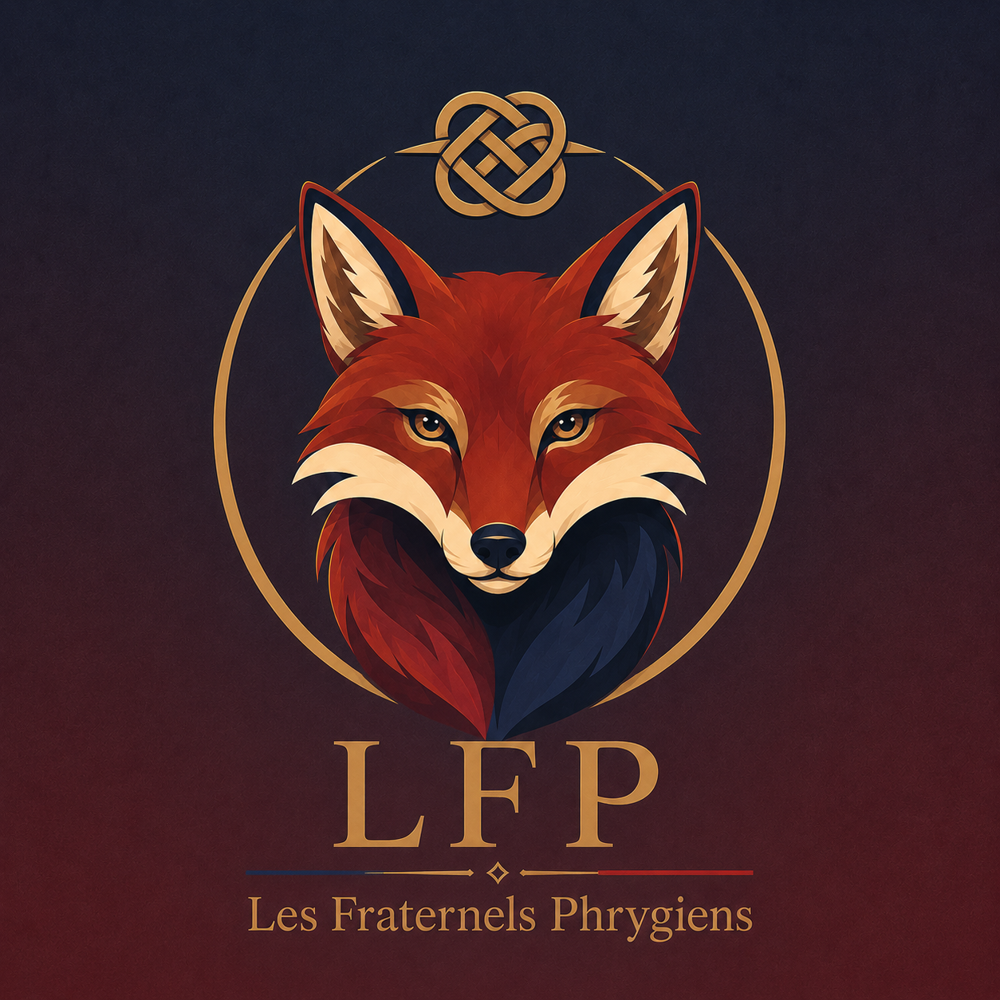

Écouter cette page

Les Fraternels
Phrygiens
LFP • Association Politique
Le sens de la République, c'est notre capacité
à nous dégager de la servitude
un État fort qui protège ses citoyens et leurs libertés.
Un programme en 11 volets, chiffré, sourcé et cohérent.
Notre identité
Le gaullisme
réécrit à gauche
Les LFP s'inscrivent dans une filiation philosophique cohérente : la méthode de Colbert, l'âme de Jaurès et la mécanique de Saint-Simon. Une gauche qui ne promet pas la gratuité. Une gauche qui promet la cohérence.
Colbert, la méthode
L'État stratège qui intervient activement dans l'économie, construit des filières industrielles nationales et protège les secteurs stratégiques. Le Plan Calcul 2.0 dans sa version du 21ème siècle.
Jaurès, l'âme
La conviction que l'émancipation sociale et l'efficacité économique ne sont pas contradictoires mais complémentaires. Pas de la haine de classe, de la justice structurelle.
Saint-Simon, la mécanique
La société comme un mécanisme vivant où chaque rouage a sa fonction. Notre programme est systémique : chaque mesure s'emboîte avec les autres. Rien n'est isolé.
La fenêtre d'Overton
Recentrer le débat politique sans dogme. Une gauche qui ne laisse pas la sécurité, la famille ou le mérite à la droite. Une gauche qui refuse les cases idéologiques.
"La fraternité ce n'est pas l'union des semblables, c'est l'union des différents. Car dans les ténèbres de la division, Marianne nous rassemble."Les Fraternels Phrygiens
Le programme
11 volets,
un système cohérent
Chaque volet est chiffré, sourcé et articulé avec les autres. Ce n'est pas une liste de promesses, c'est un programme de gouvernement.
Philosophie
Les fondements idéologiques des LFP : gaullisme de gauche, fenêtre d'Overton, logique de rassemblement, inégalités comme condition perpétuelle.
TéléchargerÉconomie
Nationalisations ciblées, réforme fiscale complète, suppression de la cotisation maladie patronale, bilan à l'équilibre sur le premier mandat.
TéléchargerÉducation
GAUS, réforme du rythme scolaire, revalorisation des enseignants, lutte contre la pédocriminalité dans les établissements.
TéléchargerSanté
Basculement vers le modèle Beveridgien, réforme de la MDPH, plan sport obligatoire, lutte contre les déserts médicaux.
TéléchargerFamille
Définition inclusive de la famille, politique nataliste, réforme de l'ASE jusqu'à 28 ans, suppression de l'obligation alimentaire pour les victimes.
TéléchargerInstitutions
Limite d'âge à 59 ans, nouveau rôle du Sénat, suppression des départements, réforme du statut des élus, parité gouvernementale légale.
TéléchargerImmigration
Diplomatie migratoire, rétablissement des faits, réforme de l'accord de 1968, levier énergétique algérien, contrat trilatéral France-Chine-Afrique.
TéléchargerDéfense
Doctrine clausewitzienne, SYDERAL et dôme énergétique, réforme de l'IGPN/IGGN, police de proximité, protection des femmes dans l'espace public.
TéléchargerÉcologie
Jachère dynamique LFP, protection marine 30%, éthique animale, transition énergétique juste, bas-côtés fleuris contre les graminées.
TéléchargerInternational
Neutralité active, réforme de l'UE en deux temps, souveraineté informationnelle, réforme des médias, francophonie comme levier diplomatique.
TéléchargerDROM-COM
Politiques adaptées à chaque territoire : chlordécone, orpaillage légalisé, reconstruction Mayotte, nickel calédonien, essais nucléaires polynésiens.
TéléchargerNos engagements
Les formules
fondatrices
Nous ne promettons pas la gratuité, nous promettons la cohérence.
Un élu se juge sur ce qu'il fait, pas sur ce qu'il montre.
Nous écrivons aujourd'hui ce que nous ferons demain pour que vous puissiez nous juger après.
On ne recentre pas la fenêtre en restant à l'intérieur, on la recentre en posant de nouvelles idées à l'extérieur.
Nous n'arrêterons pas la croissance, nous changerons ce qu'elle consomme.
La puissance sans justice engendre la colère, et la colère finit par détruire la puissance.
La communauté LFP
citoyens ont déjà
rejoint les LFP
mis à jour en temps réel
Nous rejoindre
Construisons
ensemble
Les Fraternels Phrygiens cherchent des citoyens qui croient qu'une politique cohérente, chiffrée et honnête est possible. Si tu veux rejoindre l'association, contacte-nous.
lesfraternelsphrygiens@gmail.com